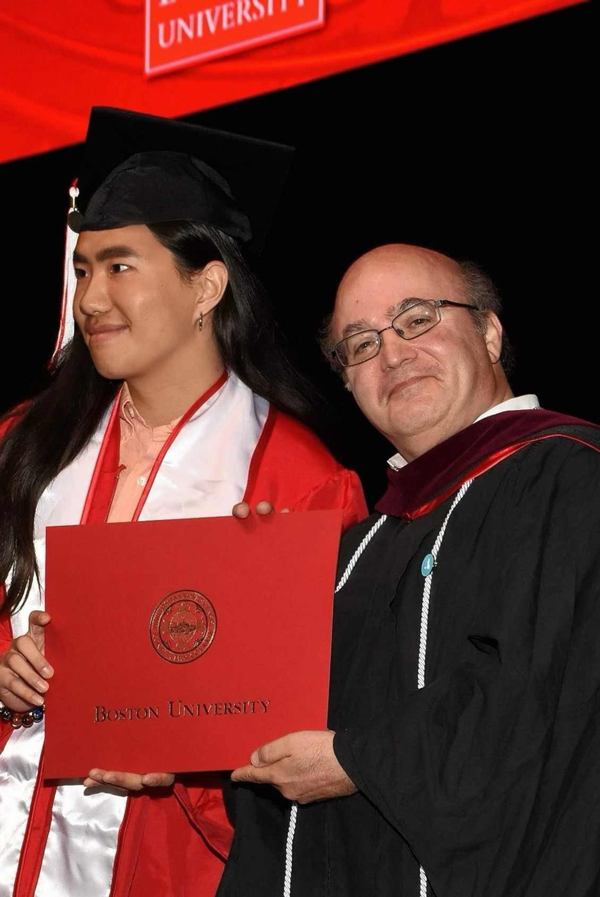

Education & Background

I'm completing my Master's in Emerging Media Studies at Boston University's College of Communication. My coursework focuses on digital strategy, media analytics, and strategic communication. I'm particularly interested in how technology transforms the way we communicate and connect.
Experience & Projects
My work in strategic communication and digital media has included:
- Strategic communication planning for diverse audiences
- Digital media analysis and trend research
- Cross-functional team collaboration on campaigns
- Content creation balancing creativity with strategy
- Data-driven optimization of campaign performance
Career Aspirations
Strategic Communication
Digital Strategy
Media Research
I'm seeking roles in strategic communication or digital strategy where I can help organizations navigate the evolving media landscape. I'm interested in positions that combine analytical thinking with creative problem-solving. Long-term, I'm considering a PhD in Communication to contribute to research on digital media's societal impact while maintaining industry connections.
Interests & Activities
Exploring AI applications in strategic communication
I enjoy following developments in AI and machine learning, social media evolution, and digital culture. In my free time, I explore Boston's cultural scene, experiment with new digital tools, and engage with online communities focused on media studies and strategic communication.